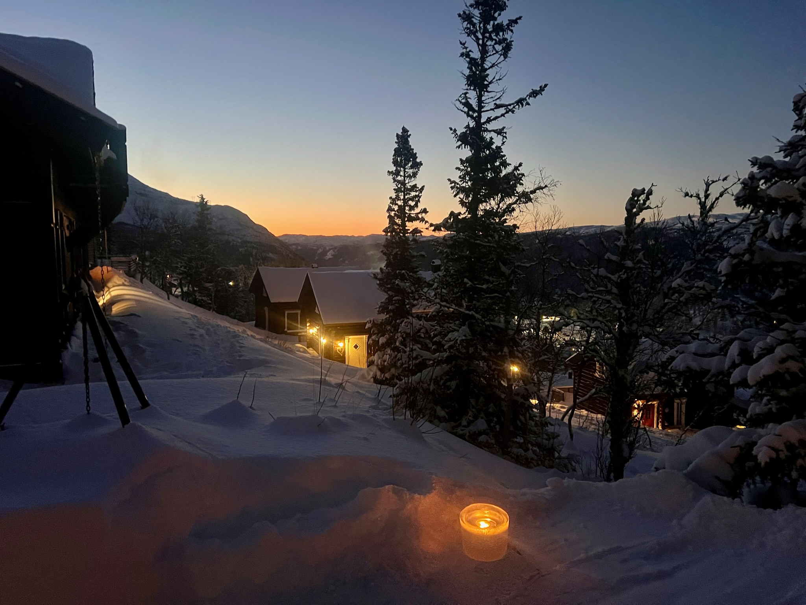
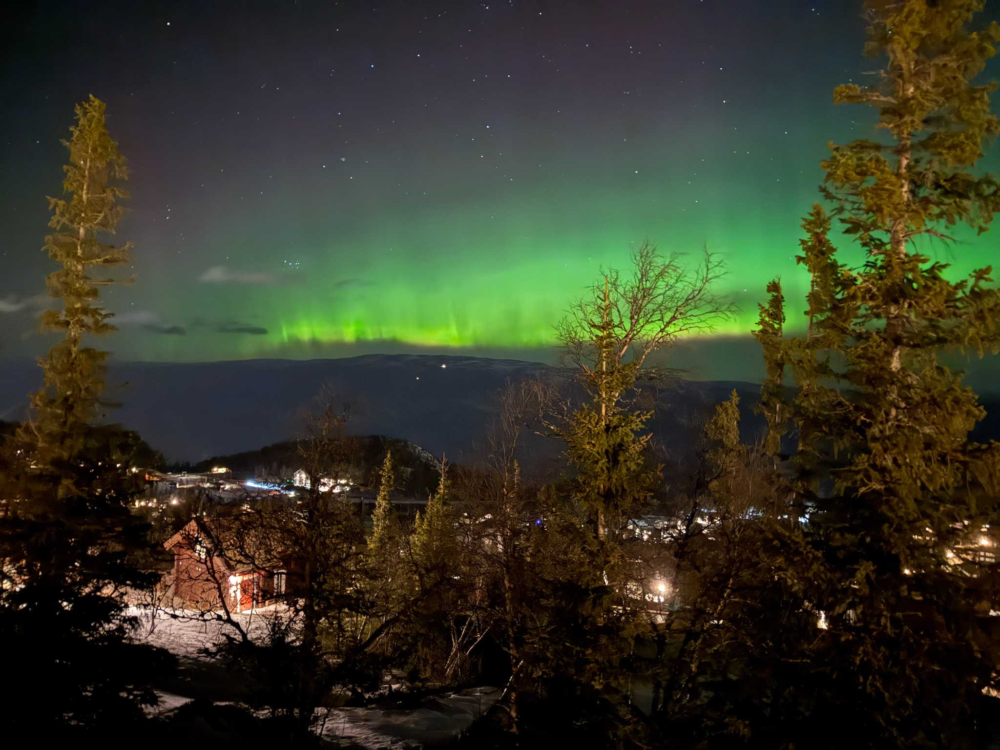

Standard
Vanlig ski inn / ski ut
Følg den røde traseen mellom hytta og bakken. Den samme traseen brukes begge veier.
Denne løsningen er den enkleste når snøforholdene er gode.
Ved lite snø
Buss + gange før du spenner på deg skiene
Ta rød busslinje til toppen av Toreskyrkja. Gå deretter til fots langs traseen på oversiden av Gausta Residence. Når forholdene tillater det, kan du spenne på deg skiene og følge traseen videre ned mot hytta.
Viktig: den stiplede delen er beskrevet som gangtrasé ved lite snø, ikke som en ren skitrase.


Sommermodus
Ski inn / ut er skjult om sommeren
Bytt til vintermodus øverst hvis du vil se skitraseen, eller gå til Gausta-siden for sommeraktiviteter.